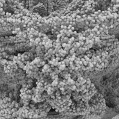

如何渲染 Mandelbulb
本简短教程介绍如何通过 .ass 文件渲染 Mandelbulb。我们将生成 Mandelbrot 和 Julia 集的“Mandelbulb”3D 版本。有关如何生成 Mandelbulb 的详细信息，请参见大型程序数据集教程。

Mandelbulb 的特写。您可以清楚看到它是由数以千计的小球体组成。
Julia 集是复平面上一些点的集合，当这些点进行平方并与某个常数 (C) 迭代相加后，“束缚点”没有逃出半径为 2 的圆形区域时，我们称这些点的集合为 Julia 集。对于常数 C 所有可能的值，存在一个完整的 Julia 集；C 是复平面上的一个二维值。
Julia 集有 2 种不同的类型：
- 完全连通。
- 由点组成的分散的 Cantor 尘（有关 Cantor 尘的详细信息，请参见 http://en.wikipedia.org/wiki/Cantor_set）
如果 Julia 集的中心点 (0,0) 是束缚点，则 Julia 集是完全连通的；如果它不是束缚点，则 Julia 集是 Cantor 尘。
Mandelbrot 集是所有完全连通的 Julia 集的集合。它是通过对所有可能的 Julia 集的中心点进行采样而生成的。这意味着，对应 Mandelbrot 集中的每个点，可以生成一个 Julia 集。虽然这两个集合在复平面中都是连续函数，但我们通常通过抽样一个均匀栅格（像素）来渲染它们，如果点是束缚点，将被渲染为黑色。
Mandelbulb 将这个数学计算延伸到三个维度。此生成器的工作原理是：对一个常规栅格中的所有点进行采样，如果点是束缚点，便将其添加到一个 AiPoints 几何体节点中进行渲染。
您需要以下文件来创建和渲染 Mandelbulb：
编译的 Mandelbulb 程序
Arnold 6：所有平台
在学习本教程前，请确保您使用的是最新版本的 Arnold。否则，渲染 Mandelbulb 时可能会遇到问题。
Ass 文件(Ass File)
- 首先，创建一个替代对象（或称为 Arnold 程序）。转到“Arnold > 替代对象 > 创建”(Arnold > Standin > Create)。选择该替代对象，并在属性编辑器中找到 Mandelbulb.ass 文件。
要安装 Mandelbulb 程序，必须将它添加到插件搜索路径（使用 ARNOLD_PLUGIN_PATH 环境变量或运行 kick -l）。加载插件后，您可以在场景中使用名为 Mandelbulb 的 Arnold 程序节点。
您可以将一个着色器指定给 Mandelbulb Arnold 程序（替代对象）。创建一个灯光并渲染场景。程序需要花些时间进行渲染以生成 Mandelbulb。
请查看此 .ass 文件中的示例。
您也可以直接在 Arnold 程序中设置 mandelbulb.dll 文件，然后使用“用户选项”(User Options)字段定义自定义参数。
栅格大小(Gridsize)
栅格大小是栅格中单元的数量，即 800 x 800 x 800。
要增大 Mandelbulb 的分辨率，需要增大栅格大小。较高的数值将创建更多的球体。增大此数值时应务必小心，因为内存使用量和渲染时间会随之增加。
| 栅格大小：400 | 栅格大小：800 |
最大迭代次数(Maximum Iterations)
尝试的最大迭代次数。如果经过这些次数的迭代后，点仍然位于半径为 2 的球体内，则认为它是束缚点。
 |
|
| 最大迭代次数：3 | 最大迭代次数：9 |
幂(Power)
在二维模式下，Julia 集和 Mandelbrot 集是通过对 Z 的二次幂加 C 进行反复迭代计算得出的。在三维模式下，使用 8 次幂可得到更有趣的效果，但是如果您需要，可尝试通过控制选项更改此值。
 |
||
| 幂：4 | 幂：8 | 幂：12 |
Spheremult
这是每个单元中球体半径的倍数；较大的球体混合得更好，但会使效果“蓬松”，较小的球体会更多地显示栅格。
|  | |
| Spheremult：1 | Spheremult：2 |
Orbitthresh
如果一个点在迭代后不会超出这个距离，则认为它完全位于该 Mandelbulb 内，并且不会添加它进行渲染；这将在 Mandelbulb 的中心清除出一个很大的空心区域，从而使几何体更亮一些。
| Orbitthresh：0.05 | Obritthresh：2 |
区块数(Chunks)
这是 Mandelbulb 分解成的区块数量，这样就不用在 RAM 中一次构建整个集。数值越大，使用的 RAM 越少，极限在 30 左右。
线程数(Threads)
对栅格值进行采样时生成的线程数量。
Julia
此开关用于控制是渲染为 Mandelbulb 还是 Julia 集
| Julia：禁用 | Julia：启用 |
Cval
用来生成 Julia 集的 C 值；当 Julia == 禁用时，将忽略此值。
本教程到此结束。尝试在 .ass 文件中增大栅格大小，并添加一些更有趣的照明效果。